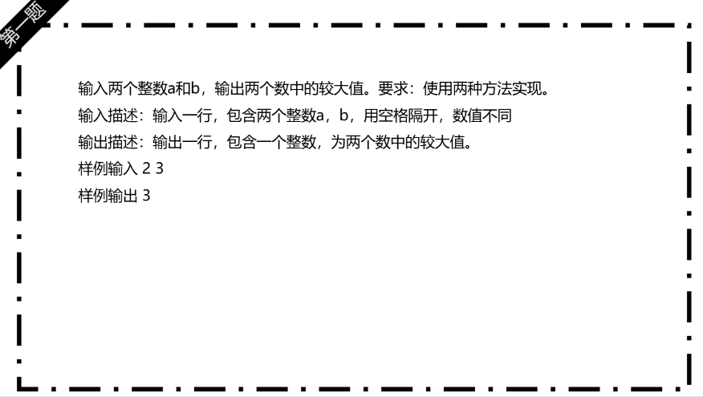
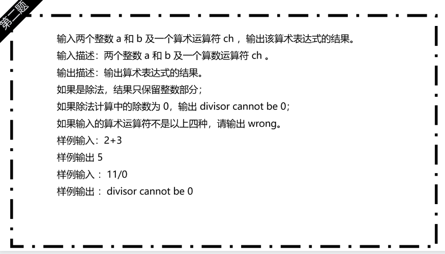
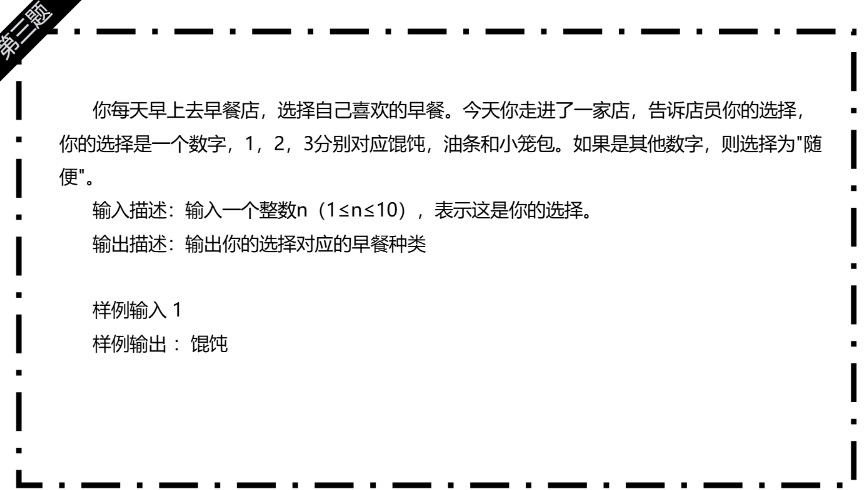

预科20课 判定星期几
知识点梳理内容
- 变量的认识： 变量是一个可以改变的数值，可以用来存储数值，数值可以是整数，小数，文字等，类似生活中盒子！
-
变量的创建：
对应的格式： 数据类型 变量名称 = 数值;
-
单分支： if 语句
特点：只有一个条件判断，如果条件成立（True），则执行对应的代码块 -
双分支：
if -else 语句
有两个可能的执行路径：
如果条件成立（True），执行 if代码块；
如果条件不成立（False），执行 else代码块。
特点：“如果满足条件，就做 A；否则，做 B”。
-
多分支：
if -else if --else if ... 语句
特点： 有多个条件判断，程序会 从上到下依次检查，第一个满足的条件 执行对应的代码块，后面的条件不再检查。
如果 所有条件都不满足，则执行 else代码块（可选）。
特点：“如果满足条件1，就做 A；否则，如果满足条件2，就做 B；……；否则，做 C”。
重点难点解析
-
分支的选择：
1个判断判断单分支；
2个判断是双分支
多个判断选择其中一种 多分支
-
分支的选择 ：
单分支（If）：“如果满足条件，就做某事”（可能不做）。
双分支（If-Else）：“如果满足条件，就做 A；否则，做 B”（必做其一）。
多分支（If-Elif-Else）：“按优先级判断，第一个满足的条件执行”（只执行一个）。
分支语句是编程的基础，掌握它们才能写出灵活的逻辑！ 🚀
-
多分支判断 ：
if-elif-else是编程中用于多条件判断的语句结构，适用于多个互斥选项的情况。其核心逻辑是：
if条件：首先检查第一个条件，若为 True，则执行对应代码块，并跳过后续所有判断。
elif条件（else if 的缩写）：若 if不成立，依次检查后续的 elif条件，一旦某个 elif为 True，执行其代码块并终止判断。
else：若所有 if和 elif均不成立，则执行 else代码块（可选，用于兜底默认情况）。
特点：
互斥性：只有第一个满足的条件会被执行，后续条件不再判断。
灵活性：可包含任意数量的 elif分支，适应复杂逻辑。
必选/可选：else非必需，但通常用于处理未覆盖的默认情况。
配套练习
- 基础语法练习1 ：数值的排序
- 基础语法练习2 ：小杨抓小偷
- 基础语法练习3 ：老师购买笔记本
- 综合练习3：男女短发问题
📸 参考代码与练习说明
【题目】用while循环计算1到50的所有整数的累加和（1+2+3+…+50）。
【思路】 1. 定义变量sum存储总和（初始为0）、变量i存储当前数字（初始为1）；
2. 当i<=50时，执行sum += i，然后i自增1；
【关键代码】 sum初始值为0，避免默认随机值影响结果；
【说明】 理解“累加器”的设计思路，掌握while循环的条件更新逻辑。

【题目】用for循环输出10到20之间的所有偶数（10、12、…、20）。
【思路】 1. 初始化i=10，循环条件i<=20，更新条件i+=2（每次加2直接取偶数）；
2. 循环体内直接输出i的值；
【关键代码】 更新条件用i+=2，避免用if判断“i%2==0”，简化代码；
【说明】 掌握for循环的“步长”设置（每次加2），优化循环效率。
【题目】用循环计算1!+2!+3!+4!+5!（阶乘：n! = n×(n-1)×…×1，如5! = 5×4×3×2×1=120）。
【思路】 1. 外层for循环控制“累加的项”（1到5）；
2. 内层for循环计算当前项的阶乘（如计算3!时，内层循环1×2×3）；
【关键代码】 内层阶乘变量需在每次外层循环时重置为1，避免累加错误；
【说明】 理解嵌套循环的执行逻辑，区分“外层循环”和“内层循环”的职责。
作业练习
- 作业练习1 ：用while循环输出1-20中的所有奇数
- 作业练习2：用for循环计算100以内能被3整除的数的总和
- 作业练习3：用循环实现“用户输入密码，直到输入正确（假设正确密码为123456）才提示登录成功”


